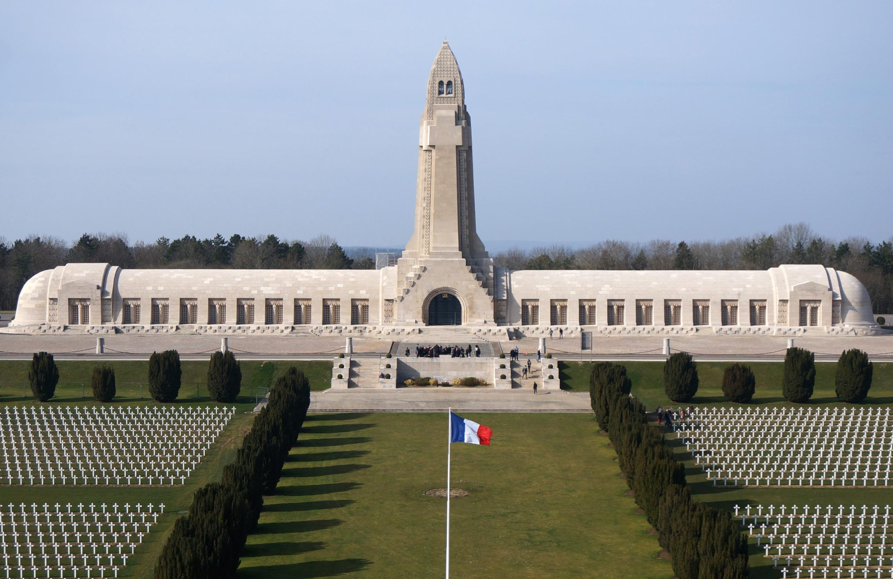

Les cicatrices du continent
La Première Guerre mondiale a laissé un héritage qui dépasse de loin l'effondrement militaire. Elle a modifié en profondeur la structure sociale, le psychisme de la population et le tissu politique de l'Europe.
Coûts humanitaires
On estime à environ 4 millions le nombre total de soldats tombés sur le front de l'Ouest. Mais les « conséquences » ne s'expriment pas uniquement en statistiques. Des millions de survivants ont souffert de handicaps à vie, de défigurations (les « Gueules Cassées » en France) et de traumatismes psychologiques incurables.
Cela s'explique par le fait que la guerre, en tant que « guerre totale », a mobilisé l'ensemble de la société et a ainsi brouillé la frontière entre le front et l'arrière. Dans de nombreux pays, une « génération perdue » de jeunes hommes est apparue, dont les projets de vie ont été anéantis par la mort industrialisée.
Comparaison des cultures de mémoire
La façon dont nous nous souvenons de la Première Guerre mondiale diffère sensiblement selon le contexte national. Alors qu'en Grande-Bretagne et en France, le 11 novembre est célébré à la fois comme un jour de triomphe et de deuil, en Allemagne, la mémoire est souvent éclipsée par l'ombre de la Seconde Guerre mondiale.
| Pays | Axe de la mémoire | Symbolisme |
|---|---|---|
| Grande-Bretagne | Le sacrifice pour la liberté (« Remembrance Day ») | Coquelicot (Poppy) |
| France | La défense de la patrie (« Grande Guerre ») | Bleuet de France |
| Allemagne | Mise en garde contre la guerre et la tyrannie (« Volkstrauertag ») | Tombe du Soldat inconnu |
Un examen critique montre que le souvenir du front de l'Ouest devient de plus en plus transnational. Des lieux de mémoire tels que l'ossuaire de Douaumont servent aujourd'hui de lieux de réconciliation franco-allemande, ce qui représente un changement significatif, passant d'une glorification nationale à une mise en garde partagée.
La mémoire visuelle
